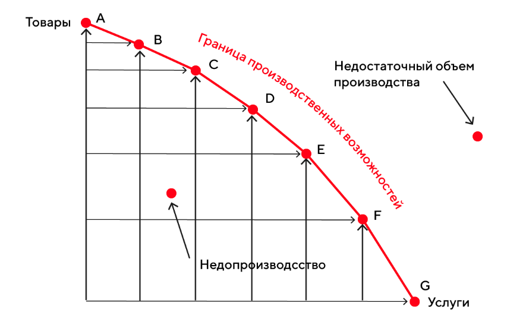

Границы производственных возможностей
Границы производственных возможностей (ГПВ) › геометрическое место точек, характеризующих альтернативные комбинации производства двух видов благ. Она ограничивает область производственных возможностей, так что любая точка на ГПВ показывает предельно возможное по ресурсным ограничениям сочетание объемов производства двух продуктов.
Если экономика работает эффективно, полностью используя доступные ограниченные ресурсы с максимально возможным результатом, то выпуск товаров соответствует точкам на границе производственных возможностей отражающим эффективный уровень выпуска.
Граница производственных возможностей считается иллюстрацией четырех фундаментальных положений
-
1 Ограниченность ресурсов
-
2 Необходимость выбора
-
3 Существование альтернативных издержек
-
4 Увеличение альтернативных издержек
Пример графика ГПВ
Граница производственных возможностей имеет отрицательный наклон - это означает, что увеличение выпуска одного товара всегда сопровождается уменьшением выпуска другого товара.
Граница производственных возможностей по отношению к началу координат имеет выпуклую форму - это означает что по мере уменьшения производства одного продукта и увеличения производства другого продукта альтернативные издержки производства возрастающего блага увеличиваются.
Точки, которые находятся выше границы производственных возможностей отражают варианты производства недостижимые при имеющихся ограниченных ресурсах и существующих технологиях.
Точки ниже границы производственных возможностей отражают неэффективное функционирование экономики как недопроизводство - отражают варианты производства меньшего количества благ, чем позволяют имеющиеся в распоряжении фирм ресурсы. Например, снижение выпуска по сравнению с возможным происходит из-за слишком высокого уровня безработицы.
Решения о рациональном использовании имеющихся ограниченных ресуров принимаются как отдельными людьми и фирмами так и государством. Поэтому граница производственных возможностей может быть использована всеми субъектами экономики для принятия решения о том как лучше использовать принадлежащие им ресурсы.